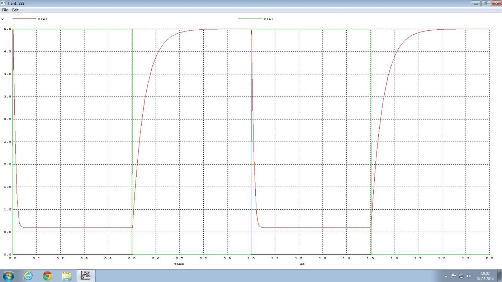

· EEM312
EEM312 Sayısal Elektronik: Y1 Raporları, Direnç Yüklü NMOS Tersleyicinin SPICE Benzetimi (5 V ve 3 V)
EEM312 – Sayısal Elektronik · 29.03.2011 · 16.10.2026
Bu yazı, Başkent Üniversitesi EEM312 Sayısal Elektronik yazılım laboratuvarının ilk deneyi Y1: Direnç yüklü NMOS ile tersleyici için yazılmış ön çalışma ve raporları bir araya getiriyor: 2011 bahar döneminden bir ön çalışma ve rapor (A), yine 2011'den bir ön çalışma (B) ve 2014'ten bir ön çalışma ve rapor (C). Hepsi arkadaşların çalışmaları; kişisel bilgiler çıkarıldı. Föyün kendisi EEM312 yazılım laboratuvarı föyleri Y1–Y3 yazısında. Kişisel bilgileri kapatılmış PDF'ler, SPICE ağ listeleri ve 2014 tarihli WinSPICE ekran görüntüleri yazının sonundaki ZIP'te.
Ön çalışma: Spice3 komutları
Üç ön çalışma da föyde istenen komutları açıklıyor:
- DC analiz:
.DC SRCNAM VSTART VSTOP VINCR [SRC2 START2 STOP2 INCR2]. Örneğin.DC VCC 0 5 0.5, kaynağı 0 V'tan 5 V'a 0.5 V adımlarla tarar;.DC VDS 0 10 .5 VGS 0 5 1iç içe iki kaynak tarar. - Gerilim kaynağı:
VNAME N+ N- DC değer(ör.VCC 1 0 DC 5); darbe kaynağıPULSE(V1 V2 TD TR TF PW PER)(başlangıç ve darbe seviyeleri, gecikme, yükselme ve düşme süreleri, darbe genişliği, periyot). - Geçici durum analizi:
.TRAN TSTEP TSTOP <TSTART <TMAX>>. - MOSFET:
MNAME DRAIN GATE SOURCE BULK MODELNAME L=… W=…; model.MODELkomutuyla tanımlanır. - Grafik:
.PLOT DC V(2) VS V(1),.PLOT TRAN V(2) V(1); WinSPICE'ta.control … plot … .endcbloğu. - Tanımlar: V_OH/V_OL çıkış yüksek/düşük seviyeleri, V_IH/V_IL eğimin −1 olduğu giriş gerilimleri, V_M = V_in = V_out noktası, NM_H = V_OH − V_IH, NM_L = V_IL − V_OL; t_r, t_f %10–%90 süreleri, t_pHL, t_pLH %50 gecikmeleri, t_d = (t_pHL + t_pLH)/2.
Benzetilen devre
İki raporda da devre aynı: 50 kΩ yük direnci, 1 pF yük sığası, L = 5 µm, W = 10 µm NMOS ve 0–5 V, 1 µs periyotlu darbe girişi (A raporunun ağ listesi):
VDC 3 0 DC 5
VIN 1 0 PULSE(0 5 0 2NS 2NS 504NS 1US)
C1 2 0 1PF
R1 3 2 50K
M1 2 1 0 0 M1 L=5U W=10U
.MODEL M1 NMOS (VTO=1 KP=20U GAMMA=0.37 PHI=0.6 CBD=3.1E-15 CBS=3.1E-15)
.DC VIN 0 5 0.01
.TRAN 0.1NS 1US
.PLOT DC V(2) VS V(1)
.PLOT TRAN V(2) V(1)
.END
Sonuçlar: 5 V ve 3 V besleme
| Büyüklük | A, 5 V | A, 3 V | C, 5 V | C, 3 V |
|---|---|---|---|---|
| V_OL | 0.7 V | 0.5 V | 0.59 V | 0.697 V |
| V_OH | 5 V | 3 V | 5 V | 3 V |
| V_IL | 1.5 V | 1.5 V | 2.0 V | 2 V |
| V_IH | 2.8 V | 2.3 V | 3.02 V | 2.565 V |
| V_M | 2.6 V | 2 V | 2.564 V | 2 V |
| NM_H | 2.2 V | 0.7 V | 1.98 V | 0.435 V |
| NM_L | 0.8 V | 1 V | 1.41 V | 1.303 V |
| t_r | 200 ns | 190 ns | 132.7 ns | 163 ns |
| t_f | 30 ns | 25 ns | 18.5 ns | 21 ns |
| t_pHL | 20 ns | 15 ns | 9 ns | 6 ns |
| t_pLH | 40 ns | 40 ns | 45.5 ns | 54 ns |
| t_d | 30 ns | 22.5 ns | 27.27 ns | 30 ns |
Gözlemler:
- Çıkış, 50 kΩ direnç üzerinden beslemeye bağlı olduğu için V_OH = V_DD; besleme 5 V'tan 3 V'a inince V_OH ve onunla birlikte NM_H belirgin şekilde düşüyor.
- t_r, t_f'den çok daha uzun: çıkış yükselirken 1 pF'lık yük 50 kΩ üzerinden doluyor (RC = 50 ns, %10–%90 süresi ≈ 2.2·RC ≈ 110 ns), düşerken ise iletimdeki NMOS'un küçük direnci üzerinden boşalıyor. Aynı nedenle t_pLH > t_pHL.
- A raporu besleme değişiminin zamanlama değerlerini çok az etkilediğini, V_OL ve V_OH'nin ise V_DD'ye bağlı olduğunu yazıyor.
- İdeal tersleyici (soru 3): giriş empedansı sonsuz, çıkış empedansı sıfır; VTC geçiş bölgesinde dikey (sonsuz kazanç), V_M = V_DD/2, NM_H = NM_L = V_DD/2, tanımsız bölge ve t_r, t_f yok. Benzetilen devre ideal olmadığı için çıkış dalgası köşeleri yuvarlanmış biçimde ortaya çıkıyor.
Not: A raporunda gürültü payları "NM_H = V_OH − V_OL" ve "NM_L = V_OL − V_IL" diye etiketlenmiş; sayısal değerler ise doğru tanımla (NM_H = V_OH − V_IH, NM_L = V_IL − V_OL) hesaplanmış.
Not: C raporunun 3 V sonuçlarında V_IL ile V_M aynı (2 V) yazılmış; V_IL, V_M'den küçük olmalı, değerlerden biri grafikten yanlış okunmuş görünüyor.
Klasörde 2014 tarihli başka bir öğrenci raporu da vardı; ölçüm değerleri ve metni A raporunun birebir kopyası olduğundan ayrıca alınmadı. ZIP'teki y1_2017_nmos_100k.cir, aynı deneyin 2017 sürümüne ait ağ listesidir (100 kΩ yük, 1 fF, W/L = 1.8/1.2 µm, Level 2 model, 3.1 V besleme).